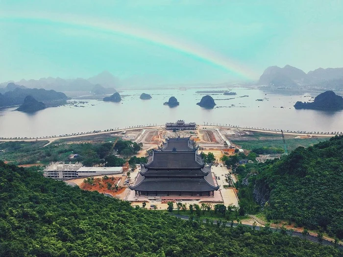

Quần thể du lịch chùa Tam Chúc Hà Nam là điểm du lịch tâm linh đang nhận được rất nhiều sự quan tâm từ các bạn trẻ và Phật tử trên cả nước. Tham khảo kinh nghiệm du lịch ở ngôi chùa lớn nhất thế giới được mệnh danh “Hạ Long trên cạn” trong bài viết.

Chùa Tam Chúc nằm ở phường Tam Chúc, tỉnh Ninh Bình, được xem như là ngôi chùa lớn nhất thế giới tính đến hiện tại, nằm trong quần thể khu du lịch Tam Chúc thơ mộng, trữ tình.
Chùa Tam Chúc thờ các vị Sư Tổ Đạt Ma, thiền sư Nguyễn Minh Không, thiền sư Khuông Việt, hòa thượng Thích Thanh Tứ, thiền sư Đỗ Pháp Thuận… là các vị quốc sư có công phát triển Phật giáo Việt Nam.